NCERT Solutions for Class 11 Physics Chapter 2 Units and Measurements are part of Class 11 Physics NCERT Solutions. Here we have given NCERT Solutions for Class 11 Physics Chapter 2 Units and Measurements.
NCERT Solutions for Class 11 Physics Chapter 2 Units and Measurements
Topics and Subtopics in NCERT Solutions for Class 11 Physics Chapter 2 Units and Measurements:
| Section Name | Topic Name |
| 2 | Units and Measurements |
| 2.1 | Introduction |
| 2.2 | The international system of units |
| 2.3 | Measurement of length |
| 2.4 | Measurement of mass |
| 2.5 | Measurement of time |
| 2.6 | Accuracy, precision of instruments and errors in measurement |
| 2.7 | Significant figures |
| 2.8 | Dimensions of physical quantities |
| 2.9 | Dimensional formulae and dimensional equations |
| 2.10 | Dimensional analysis and its applications |
NCERT Solutions Class 11 PhysicsPhysics Sample Papers
QUESTIONS FROM TEXTBOOK
Question 2. 1. Fill in the blanks
(a) The volume of a cube of side 1 cm is equal to…………m3.
(b) The surface area of a solid cylinder of radius 2.0 cm and height 10.0 cm is equal to ……..(mm)2.
(c) A vehicle moving with a speed of 18 km h-1 covers ………. m in 1 s.
(d) The relative density of lead is 11.3. Its density is …….. g cm-3 or ………. kg m-3.
Answer: (a) Volume of cube, V = (1 cm)3 = (10-2 m)3 10-6 m3.
Hence, answer is 10-6
(b) Surface area = 2πrh + 2πr2 = 2πr (h + r)
= 2 x 22/7 x 2 x 10 (10 x 10 + 2 x 10) mm2 = 1.5 x 104 mm2 Hence, answer is 1.5 x 104.
(c) Speed of vehicle = 18 km/h = 18 x 1000/3600 m/s
= 5 m/s ; so the vehicle covers 5 m in 1 s. = 11.3
(d) Density= 11.3 g cm-3
=11.3 x 103 kg m-3 [1 kg =103 g,1m=102 cm]
=11.3 x 103 kg m-4
Question 2. 2. Fill in the blanks by suitable conversion of units
(a) 1 kg m2 s-2 = …. g cm2 s-2
(b) 1 m =………… ly
(c) 3.0 m s-2 = …. km h-2
(d) G = 6.67 x 10-11 N m2 (kg)-2 = …. (cm)3 s-2 g-1.
Answer:
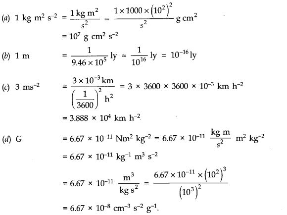
More Resources for CBSE Class 11
- NCERT Solutions
- NCERT Solutions Class 11 Maths
- NCERT Solutions Class 11 Physics
- NCERT Solutions Class 11 Chemistry
- NCERT Solutions Class 11 Biology
- NCERT Solutions Class 11 Hindi
- NCERT Solutions Class 11 English
- NCERT Solutions Class 11 Business Studies
- NCERT Solutions Class 11 Accountancy
- NCERT Solutions Class 11 Psychology
- NCERT Solutions Class 11 Entrepreneurship
- NCERT Solutions Class 11 Indian Economic Development
- NCERT Solutions Class 11 Computer Science
Question 2. 3. A calorie is a unit of heat or energy and it equals about 4.2 J where 1 J = 1 kgm2 s-2. Suppose we employ a system of units in which the unit of mass equals a kg, the unit of length equals j8 m, the. unit of time is ys. Show that a calorie has a magnitude 4.2 α-1 β-2 γ2 in terms of the new units.
Answer:
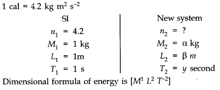
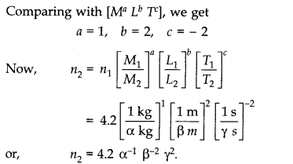
Question 2. 4. Explain this statement clearly:
“To call a dimensional quantity ‘large’ or ‘small’ is meaningless without specifying a standard for comparison”. In view of this, reframe the following statements wherever necessary:
(a) atoms are very small objects
(b) a jet plane moves with great speed
(c) the mass of Jupiter is very large
(d) the air inside this room contains a large number of molecules
(e) a proton is much more massive than an electron
(f) the speed of sound is much smaller than the speed of light.
Answer: Physical quantities are called large or small depending on the unit (standard) of measurement. For example, the distance between two cities on earth is measured in kilometres but the distance between stars or inter —galactic distances are measured in parsec. The later standard parsec is equal to 3.08 x 1016 m or 3.08 x 1012 km is certainly larger than metre or kilometre. Therefore, the inter-stellar or intergalactic distances are certainly larger than the distances between two cities on earth.
(a) The size of an atom is much smaller than even the sharp tip of a pin.
(b) A Jet plane moves with a speed greater than that of a super fast train.
(c) The mass of Jupiter is very large compared to that of the earth.
(d) The air inside this room contains more number of molecules than in one mole of air.
(e) This is a correct statement.
(f) This is a correct statement.
Question 2. 5. A new unit of length is chosen such that the speed of light in vacuum is unity. What is the distance between the Sun and the Earth in terms of the new unit if light takes 8 min and 20 s to cover this distance?
Answer: Distance between Sun and Earth
= Speed of light in vacuum x time taken by light to travel from Sim to Earth = 3 x 108 m/ s x 8 min 20 s = 3 x 108 m/s x 500 s = 500 x 3 x 108 m.
In the new system, the speed of light in vacuum is unity. So, the new unit of length is 3 x 108 m.
.•. distance between Sun and Earth = 500 new units.
Question 2. 6. Which of the following is the most precise device for measuring length:
(a) a vernier callipers with 20 divisions on the sliding scale.
(b) a screw gauge of pitch 1 mm and 100 divisions on the circular scale.
(c) an optical instrument that can measure length to within a wavelength of light?
Answer: (a) Least count of vernier callipers = 1/20 = 0.05 mm = 5 x 10-5 m
(b) Least count of screw gauge =Pitch/No. of divisions on circular scale = 1 x 10-3/100 = 1 x 10-5 m
(c) Least count of optical instrument = 6000 A (average wavelength of visible light as 6000 A) = 6 x 10-7m As the least count of optical instrument is least, it is the most precise device out of three instruments given to us.
Question 2.7. A student measures the thickness of a human hair by looking at it through a microscope of magnification 100. He makes 20 observations and finds that the average width of the hair in the field of view of the microscope is 3.5 mm. What is the estimate on the thickness of hair?
Answer: As magnification, m =thickness of image of hair/ real thickness of hair = 100
and average width of the image of hair as seen by microscope = 3.5 mm
.•. Thickness of hair =3.5 mm/100 = 0.035 mm
Question 2. 8. Answer the following:
(a) You are given a thread and a metre scale. How will you estimate the diameter of the thread?
(b) A screw gauge has a pitch of 1.0 mm and 200 divisions on the circular scale. Do you think it is possible to increase the accuracy of the screw gauge arbitrarily by increasing the number of divisions on the circular scale?
(c) The mean diameter of a thin brass rod is to be measured by vernier callipers. Why is a set of 100 measurements of the diameter expected to yield a more reliable estimate than a set of 5 measurements only?
Answer: (a) Wrap the thread a number of times on a round pencil so as to form a coil having its turns touching each other closely. Measure the length of this coil, mode by the thread, with a metre scale. If n be the number of turns of the coil and l be the length of the coil, then the length occupied by each single turn i.e., the thickness of the thread = 1/n .
This is equal to the diameter of the thread.
(b) We know that least count = Pitch/number of divisions on circular scale When number of divisions on circular scale is increased, least count is decreased. Hence the accuracy is increased. However, this is only a theoretical idea.Practically speaking, increasing the number of ‘turns would create many difficulties.
As an example, the low resolution of the human eye would make observations difficult. The nearest divisions would not clearly be distinguished as separate. Moreover, it would be technically difficult to maintain uniformity of the pitch of the screw throughout its length.
(c) Due to random errors, a large number of observation will give a more reliable result than smaller number of observations. This is due to the fact that the probability (chance) of making a positive random error of a given magnitude is equal to that of making a negative random error of the same magnitude. Thus in a large number of observations, positive and negative errors are likely to cancel each other. Hence more reliable result can be obtained.
Question 2. 9. The photograph of a house occupies an area of 1.75 cm2 on a 35 mm slide. The slide is projected on to a screen, and the area of the house on the screen is 1.55 m2. What is the linear magnification of the projector-screen arrangement?
Answer: Here area of the house on slide = 1.75 cm2 = 1.75 x 10-4 m2 and area of the house of projector-screen = 1.55 m2
.•. Areal magnification =Area on screen/Area on slide = 1.55 m2 / 1.75 x 10-4 m2 = 8.857 x 103
.•. Linear magnification
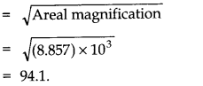
Question 2. 10. State the number of significant figures in the following:
(a) 0.007 m2 (b) 2.64 x 104 kg
(c) 0.2370 g cm-3 (d) 6.320 J
(e) 6.032 N m-2 (f) 0.0006032 m2
Answer: (a) 1 (b) 3 (c) 4 (d) 4 (e) 4 (f) 4.
Question 2 .11. ‘The length, breadth and thickness of a rectangular sheet of metal are 4.234 m, 1.005 m and 2.01 cm respectively. Give the area and volume of the sheet to correct significant figures.
Answer: As Area = (4.234 x 1.005) x 2 = 8.51034 = 8.5 m2
Volume = (4.234 x 1.005) x (2.01 x 10-2) = 8.55289 x 10-2 = 0.0855 m3.
Question 2. 12. The mass of a box measured by a grocer’s balance is 2.3 kg. Two gold pieces of masses 20.15 g and 20.17 g are added to the box. What is (a) the total mass of the box (b) the difference in the masses of the pieces to correct significant figures?
Answer: (a) Total mass of the box = (2.3 + 0.0217 + 0.0215) kg = 2.3442 kg
Since the least number of decimal places is 1, therefore, the total mass of the box = 2.3 kg.
(b) Difference of mass = 2.17 – 2.15 = 0.02 g
Since the least number of decimal places is 2 so the difference in masses to the correct significant figures is 0.02 g.
Question 2. 13. A physical quantity P is related to four observables a, b, c and d as follows:
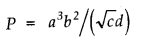
The percentage errors of measurement in a, b, c and d are 1%, 3%, 4% and 2%, respectively. What is the percentage error in the quantity P? If the value of P calculated using the above relation turns out to be 3.763, to what value should you round off the result?
Answer:
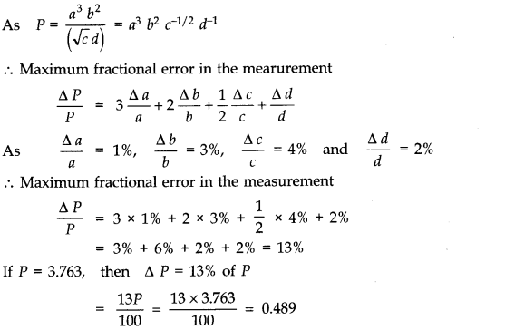
As the error lies in first decimal place, the answer should be rounded off to first decimal place. Hence, we shall express the value of P after rounding it off as P = 3.8.
Question 2. 14. A book with many printing errors contains four different formulas for the displacement y of a particle undergoing a certain periodic motion:
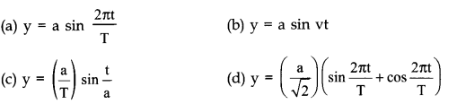
(a = maximum displacement of the particle, v = speed of the particle, T = time-period of motion)Rule out the wrong formulas on dimensional grounds.
Answer:According to dimensional analysis an equation must be dimensionally homogeneous.
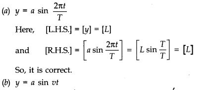
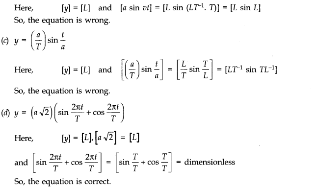
Question 2. 15. A famous relation in physics relates ‘moving mass’ m to the ‘rest mass’ m0 of a particle in terms of its speed v and the speed of light c. (This relation first arose as a consequence of special relativity due to Albert Einstein). A boy recalls the relation almost correctly but forgets where to put the constant c. He writes:
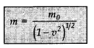
Guess where to put the missing c.
Answer:
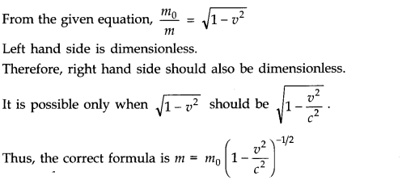
Question 2. 16. The unit of length convenient on the atomic scale is known as an angstrom and is denoted by A: 1 A = 10-10 m. The size of a hydrogen atom is about 0.5 A. What is the total atomic volume in m3 of a mole of hydrogen atoms?
Answer: Volume of one hydrogen atom = 4/3 πr3 (volume of sphere)
= 4/3 x 3.14 x (0.5 x 10-10) m3 = 5.23 x 10-31 m3
According to Avagadro’s hypothesis, one mole of hydrogen contains 6.023 x 1023 atoms.
Atomic volume of 1 mole of hydrogen atoms
= 6.023 x 1023 x 5.23 x 10-31 = 3.15 x 10-7m3.
Question 2. 17. One mole of an ideal gas at standard temperature and pressure occupies 22.4 L (molar volume). What is the ratio of molar volume to the atomic volume of a mole of hydrogen? (Take the size of hydrogen molecule to be about 1 A.) Why is this ratio so large?
Answer: Volume of one mole of ideal gas, Vg
= 22.4 litre = 22.4 x 10-3 m3
Radius of hydrogen molecule = 1A/2
= 0.5 A = 0.5 x 10-10 m
Volume of hydrogen molecule = 4/3 πr3
=4/3 x 22/7 (0.5 x 10-10)3 m3
= 0.5238 x 10-30 m3
One mole contains 6.023 x 1023 molecules.
Volume of one mole of hydrogen, VH
= 0.5238 x 10-30 x 6.023 x 1023 m3 = 3.1548 x 10-7 m3
Now Vg/VH=22.4 x 10-3/3.1548 x 10-7 =7.1 x 104
The ratio is very large. This is because the interatomic separation in the gas is very large compared to the size of a hydrogen molecule.
Question 2. 18. Explain this common observation clearly: If you look out of the window of a fast moving train, the nearby trees, houses etc., seem to move rapidly in a direction opposite to the train’s motion, but the distant objects (hill tops, the Moon, the stars etc.) seem to be stationary. (In fact, since you are aware that you are moving, these distant objects seem to move with you).
Answer: The line joining a given object to our eye is known as the line of sight. When a train moves rapidly, the line of sight of a passenger sitting in the train for nearby trees changes its direction rapidly. As a result, the nearby trees and other objects appear to run in a direction opposite to the train’s motion. However, the line of sight of distant and large size objects e.g., hill tops, the Moon, the stars etc., almost remains unchanged (or changes by an extremely small angle). As a result, the distant object seems to be stationary.
Question 2. 19. The principle of ‘parallax’ is used in the determination of distances of very distant stars. The baseline AB is the line joining the Earth’s two locations six months apart in its orbit around the Sun. That is, the baseline is about the diameter of the Earth’s orbit =3 x 10 n m. However, even the nearest stars are so distant that with such a long baseline, they show parallel only of the order of 1″ (second) of arc or so. A parsec is a convenient unit of length on the astronomical scale. It is the distance of an object that will show a parallax of 1″ (second) of arc from opposite ends of a baseline equal to the distance from the Earth to the Sun. How much is a parsec in terms of metres?
Answer: From parallax method we can say
θ=b/D,where b=baseline ,D = distance of distant object or star
Since, θ=1″ (s) and b=3 x 1011 m
D=b/20=3 x 1011/2 x 4.85 x 10-6 m
or D=3 x 1011/9.7 x 10-6 m =30 x 1016/9.7 m
= 3.09 x 1016 m = 3 x 1016 m.
Question 2. 20. The nearest star to our solar system is 4.29 light years away. How much is this distance in terms of parsecs? How much parallax would this star (named Alpha Centauri) show when viewed from two locations of the Earth six months apart in its orbit around the Sun?
Answer: As we know, 1 light year = 9.46 x 1015 m
.•. 4.29 light years = 4.29 x 9.46 x 1015 = 4.058 x 1016 m
Also, 1 parsec = 3.08 x 1016 m
.•. 4.29 light years =4.508 x 1016/3.80 x 1016 = 1.318 parsec = 1.32 parsec.
As a parsec distance subtends a parallax angle of 1″ for a basis of radius of Earth’s orbit around the Sun (r).In present problem base is the distance between two locations of the Earth six months apart in its orbit around the Sun = diameter of Earth’s orbit (b = 2r).
.•. Parallax angle subtended by 1 parsec distance at this basis = 2 second (by definition of parsec).
.•. Parallax angle subtended by the star Alpha Centauri at the given basis θ = 1.32 x 2 = 2.64″.
Question 2. 21. Precise measurements of physical quantities are a need of science. For example, to ascertain the speed of an aircraft, one must have an accurate method to find its positions at closely separated instants of time. This was the actual motivation behind the discovery of radar in World War II. Think of different examples in modem science where precise measurements of length, time, mass etc., are needed. Also, wherever you can, give a quantitative idea of the precision needed.
Answer: Extremely precise measurements are needed in modem science. As an example, while launching a satellite using a space launch rocket system we must measure time to a precision of 1 micro second. Again working with lasers we require length measurements to an angstrom unit (1 A° = 10-10m) or even a fraction of it. For estimating nuclear sizes we require a precision of 10-15 m. To measure atomic masses using mass spectrograph we require a precision of 10-30kg and so on.
Question 2.22. Just as precise measurements are necessary in science, it is equally important to be able to make rough estimates of quantities using rudimentary ideas and common observations. Think of ways by which you can estimate the following (where an estimate is difficult to obtain, try to get an upper bound on the quantity):
(a) the total mass of rain-bearing clouds over India during the Monsoon
(b) the mass of an elephant
(c) the wind speed during a storm
(d) the number of strands of hair on your head
(e) the number of air molecules in your classroom.
Answer: (a) The average rainfall of nearly 100 cm or 1 m is recorded by meteorologists, during Monsoon, in India. If A is the area of the country, then A = 3.3 million sq. km = 3.3 x 106 (km)2 = 3.3 x 106 x 106m2= 3.3 x 1012 m2
Mass of rain-bearing clouds
= area x height x density = 3.3 x 1012 x 1 x 1000 kg = 3.3 x 1015 kg.
(b) Measure the depth of an empty boat in water. Let it be d1. If A be the base area of the boat, then volume of water displaced by boat, V1 = Ad2
Let d2 be the depth of boat in water when the elephant is moved into the boat. Volume of water displaced by (boat + elephant), V2 = Ad2 Volume of water displaced by elephant,
V = V2-V1 = A(d2 -d1)
If p be the density of water, then mass of elephant = mass of water displaced by it = A(d2 – d1) p.
(c) Wind speed can be estimated by floating a gas-filled balloon in air at a known height h. When there is no wind, the balloon is at A. Suppose the wind starts blowing to the right such that the balloon drifts to position B in 1 second.
Now, AB = d = hθ.
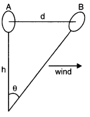
The value of d directly gives the wind speed.
(d) Let us assume that the man is not partially bald. Let us further assume that the hair on the head are uniformly distributed. We can estimate the area of the head. The thickness of a hair can be measured by using a screw gauge. The number of hair on the head is clearly the ratio of the area of head to the cross-sectional area of a hair.
Assume that the human head is a circle of radius 0.08 m i.e., 8 cm. Let us further assume that the thickness of a human air is 5 x 10-5m.
Number of hair on the head
=Area of the head/Area of cross – section of a hair
=π (0.08)2/π(5 x 10-5)=64 x 10-4/25 x 10-10=2.56 x 106
The number of hair on the human head is of the order of one million.
(e) We can determine the volume of the class-room by measuring its length, breadth and height. Consider a class room of size 10 m x 8 m x 4 m. Volume of this room is 320 m3. We know that 22.4l or 22.4 x 10-3 m3 of air has 6.02 x 1023 molecules (equal to Avogadro’s number).
Number of molecules of air in the class room
=(6.02 x 1023 /22.4 x 10-3 ) x 320 =8.6 x 1027
Question 2. 23. The Sun is a hot plasma (ionized matter) with its inner core at a temperature exceeding 107 K, and its outer surface at a temperature of about 6000 K. At these high temperatures, no substance remains in a solid or liquid phase. In what range do you expect the mass density of the Sun to be, in the range of densities of solids and liquids or gases? Check if your guess is correct from the following data: mass of the Sun = 2.0 x 1030 kg, radius of the Sun = 7.0 x 108 m.
Answer: Given M = 2 x 1030 kg, r = 7 x 108 m
.-. Volume of Sun = 4/3πr3 x 3.14 x (7 x 108)3 = 1.437 x 1027 m3
As p = M/V, .’. p = 2 x 1030/1.437 x 1027= 1391.8 kg m-3 = 1.4 x 103 kg m-3
Mass density of Sun is in the range of mass densities of solids/liquids and not gases.
Question 2. 24. When the planet Jupiter is at a distance of 824.7 million kilometres from the Earth, its angular diameter is measured to be 35.72″ of arc. Calculate the diameter of Jupiter.
Answer: Given angular diameter θ = 35.72= 35.72 x 4.85 x 10-6 rad
= 173.242 x 10-6 = 1.73 x 10-4 rad
Diameter of Jupiter D = θ x d = 1.73 x 10-4 x 824.7 x 109 m
=1426.731 x 103 = 1.43 x 108 m
Question 2. 25. A man walking briskly in rain with speed v must slant his umbrella forward making an angle θ with the vertical. A student derives the following relation between θ and v: tanθ = v and checks that the relation has a correct limit: as v—>θ, θ —>0, as expected. (We are assuming there is no strong wind and that the rain falls vertically for a stationary man). Do you think this relation can be correct? If not, guess the correct relation.
Answer: According to principle of homogenity of dimensional equations,
Dimensions of L.H.S. = Dimensions of R.H.S.
Here, v = tan θ
i. e., [L1 T-1] = dimensionless, which is incorrect.
Correcting the L.H.S., we. get
v/u= tan θ, where u is velocity of rain.
Question 2. 26. It is claimed that two cesium clocks, if allowed to run for 180 years, free from any disturbance, may differ by only about 0.02 s. What does this imply for the accuracy of the standard cesium clock in measuring a time-interval of 1 s?
Answer: Total time = 100 years = 100 x 365 x 24 x 60 x 60 s
Error in 1 second=0.02/100 x 365 x 24 x 60 x 60
=6.34 x 10-12 s
.•. Accuracy of 1 part in 1011 to 1012.
Question 2. 27. Estimate the average mass density of a sodium atom assuming its size to be about 2.5 A. (Use the known values of Avogadro’s number and the atomic mass of sodium). Compare it with the density of sodium in its crystalline phase: 970 kg m3-. Are the two densities of the same order of magnitude? If so, why?
Answer: It is given that radius of sodium atom, R = 2.5 A = 2.5 x 10-10 m
Volume of one mole atom of sodium, V = NA .4/3 π R3
V = 6.023 x 1023 x –4/3 x 3.14 x (2.5 x 10-10)3 m3 and mass of one mole atom of sodium, M = 23 g = 23 x 10-3 kg
.•. Average mass density of sodium atom, p = M/V
=(23 x 10-3/6.023 x 1023 x 4/3 x 3.14 x (2.5 x 10-10))
= 6.96 x 102 kg m-3 = 0.7 x 10-3 kg m-3
The density of sodium in its crystalline phase = 970 kg m-3
= 0.97 x 103 kg m-3
Obviously the two densities are of the same order of magnitude (= 103 kg m-3). It is on account of the fact that in solid phase atoms are tightly packed and so the atomic mass density is close to the mass density of solid.
Question 2. 28. The unit of length convenient on the nuclear scale is afermi: I f=10-15 m. Nuclear sizes obey roughly the following empirical relation:
r = r0 A1/3
where r is the radius of the nucleus, A its mass number, and r0 is a constant equal to about,1.2 f. Show that the rule implies that nuclear mass density is nearly constant for different nuclei. Estimate the mass density of sodium nucleus. Compare it with the average mass density of a sodium atom obtained in Exercise 2.27.
Answer: Assume that the nucleus is spherical. Volume of nucleus
= 4/3 πr3 = 4/3 π [r0 A1/3]3 = 4/3 πr03A
Mass of nucleus = A
.•. Nuclear mass density = Mass of nucleus/Volume of nucleus
= A/(4/3πr03A) = 3/4πr03
Since r0 is a constant therefore the right hand side is a constant. So, the nuclear mass density is independent of mass number. Thus, nuclear mass density is constant for different nuclei.
For sodium, A = 23
.’. radius of sodium nucleus,
r = 1.2 x 10-15 (23)1/3 m = 1.2 x 2.844 x 10-15 m =3.4128 x 10-15
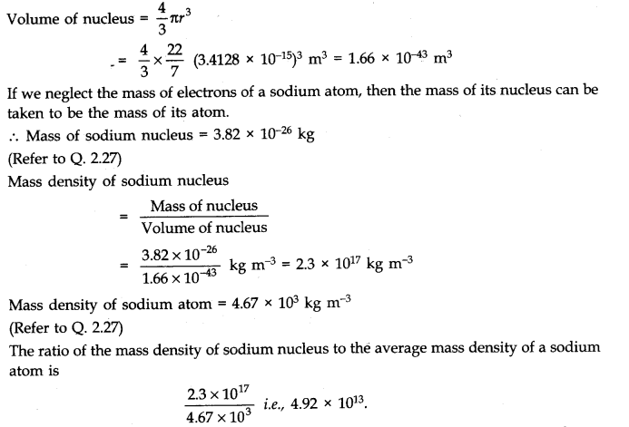
So, the nuclear mass density is nearly 50 million times more than the atomic mass density for a sodium atom.
Question 2. 29. A LASER is source of very intense, monochromatic, and unidirectional beam of light. These properties of a laser light can be exploited to measure long distances. The distance of the Moon from the Earth has been already determined very precisely using a laser as a source of light. A laser light beamed at the Moon takes 2.56 s to return after reflection at the Moon’s surface. How much is the radius of the lunar orbit around the Earth?
Answer: We known that speed of laser light = c = 3 x 108 m/s. If d be the distance of Moon from the earth, the time taken by laser signal to return after reflection at the Moon’s surface
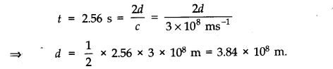
Question 2. 30. A SONAR (sound navigation and ranging) uses ultrasonic waves to detect and locate objects under water. In a submarine equipped with a SONAR the time delay between generation of a probe wave and the reception of its echo after reflection from an enemy submarine is found to be 77.0 s. What is the distance of the enemy submarine? (Speed of sound in water = 1450 m s-1).
Answer: Here speed of sound in water v = 1450 m s-1 and time of echo t = 77.0 s.
If distance of enemy submarine be d, then t = 2d/v
.’. d=vt/2 =1450 x 77.0/2 =55825 m=55.8 x 103 m or 55.8 km.
Question 2. 31. The farthest objects in our Universe discovered by modem astronomers are so distant that light emitted by them takes billions of years to reach the Earth. These objects (known as quasars) have many puzzling features, which have not yet been satisfactorily explained. What is the distance in km of a quasar from which light takes 3.0 billion years to reach us?
Answer: The time taken by light from the quasar to the observer
t = 3.0 billion years = 3.0 x 109 years As 1 ly = 9.46 x 1015 m
.•. Distance of quasar from the observer d = 3.0 x 109 x 9.46 x 1015 m
= 28.38 x 1024 m = 2.8 x 1025 m or 2.8 x 1022 km.
Question 2. 32. It is a well known fact that during a total solar eclipse the disk of the Moon almost completely covers the disk of the Sun. From this fact and from the information you can gather from examples 2.3 and 2.4, determine the approximate diameter of the Moon.
Answer: From examples 2.3 and 2.4, we get θ = 1920″ and S = 3.8452 x 108 m. During the total solar eclipse, the disc of the moon completely covers the disc of the sun, so the angular diameter of both the sun and the moon must be equal. Angular diameter of the moon, θ= Angular diameter of the sun
= 1920″ = 1920 x 4.85 x 10-6 rad [1″ = 4.85 x 10-6 rad]
The earth-moon distance, S = 3.8452 x 108 m .’. The diameter of the moon, D = θ x S
= 1920 x 4.85 x 10-6 x 3.8452 x 108 m = 35806.5024 x 102 m = 3581 x 103 m 3581 km.
Question 2. 33. A great physicist of this century (P.A.M. Dirac) loved playing with numerical values of fundamental constants of nature. This led him to an interesting observation. Dirac found that from the basic constants of atomic physics (c, e, mass of electron, mass of proton) and the gravitational constant G, he could arrive at a number with the dimension of time. Further, it was a very large number, its magnitude being close to the present estimate on the age of the universe (-15 billion years). From the table of fundamental constants in this book, try to see if you too can construct this number (or any other interesting number you can think of). If its coincidence with the age of the universe were significant, what would this imply for the constancy of fundamental constants?
Answer: The values of different fundamental constants are given below:
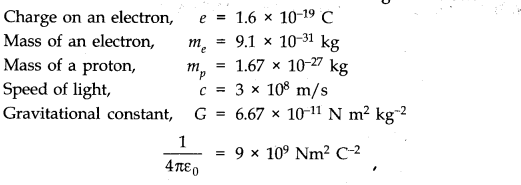
We have to try to make permutations and combinations of the universal constants and see if there can be any such combination whose dimensions come out to be the dimensions of time. One such combination is:
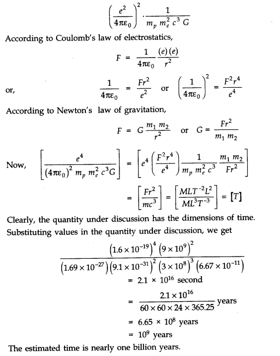
QUESTIONS BASED ON SUPPLEMENTARY CONTENTS
Question 1. The radius of a sphere is measured as (2.1 ± 0.5) cm calculate its surface area with error limits.
Answer: Radius of the sphere = (2.1 ± 0.5) cm
.-. r = 2.1 and Ar = ± 0.5
S.A. = 4 π r2
= 4 x 3.14 x 2.1 x 2.1
=55.4 cm2
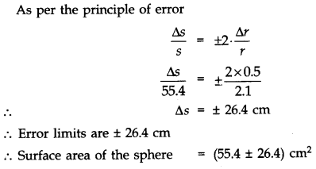
Question 2. The voltage across a lamp is (6.0 ± 0.1) volt and the current passing through it is (4.0 ± 0.2) ampere. Find the power consumed by the lamp.
Answer: Power P = V x I
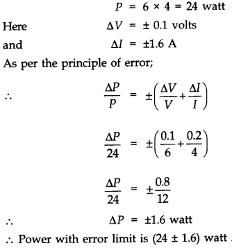
Question 3. The length and breadth of a rectangular block are 25.2 cm and 16.8 cm, which have both been measured to an accuracy of 0.1 cm. Find the area of the rectangular block.
Answer: Here l = (25.2 ± 0.1) cm
b = (16.8 ±0.1) cm
Area= l x b
= 25.2 x 16.8
= 423.4 cm2
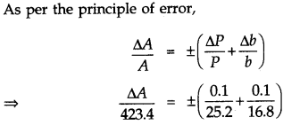
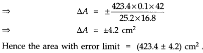
Question 4. A force of (2500 ±5) N is applied over an area of (0.32 ± 0.02) m2. Calculate the pressure exerted over the area.
Answer:
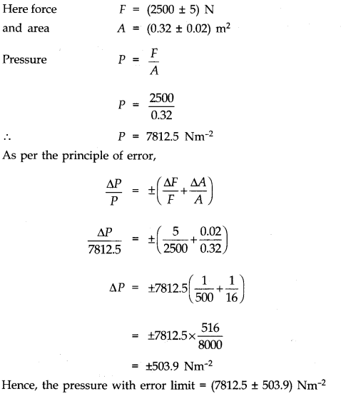
Question 5. To find the value of ‘g by using a simple pendulum, the following observations were made : Length of thread l = (100 ± 0.1) cm
Time period of oscillation T = (2 ± 0.1) sec
Calculate the maximum permissible error in measurement of ‘g’. Which quantity should be measured more accurately and why?
Answer:
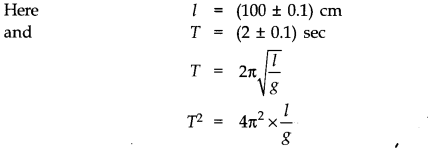
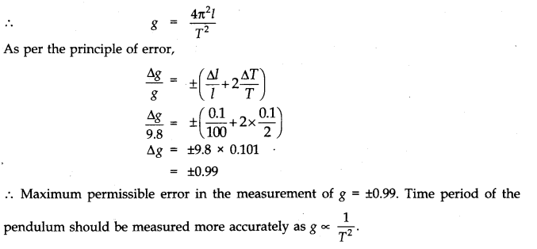
Question 6. For a glass prism of refracting angle 60°, the minimum angle of deviation Dm is found to be 36° with a maximum error of 1.05°. When a beam of parallel light is incident on the prism, find the range of experimental value of refractive index ‘μ’. It is known that the refractive index ‘μ’ of the material of the prism is given by
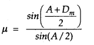
Answer:
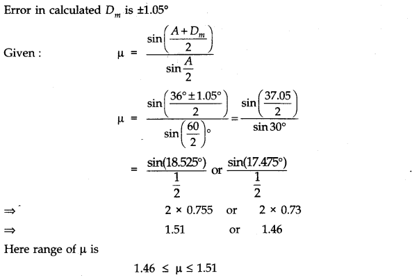
Question 7. The radius of curvature of a concave mirror, measured by a spherometer is given by R=l2/6h +h/2
The value of l and h are 4.0 cm and 0.065 cm respectively where l is measured by a metre scale and h by the spherometer. Find the relative error in the measurement of R.
Answer: Given that l = 4 cm and Al = 0.1 cm (least count of the metre scale) here l is the distance between the legs of the spherometer.
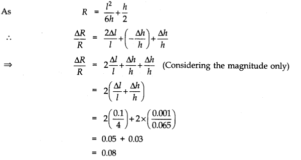
Question 8. In Searle’s experiment, the diameter of the wire as measured by a screw guage of least count 0.001 cm, is 0.500 cm. The length, measured by a scale of least count 0.1 cm is 110.0 cm. When a weight of 40 N is suspended from the wire, its extension is measured to be 0.125 cm by a micrometer of least count 0.001 cm. Find the Young’s modulus of the material of the wire from this data.
Answer: Young’s modulus of the material of the wire is given as
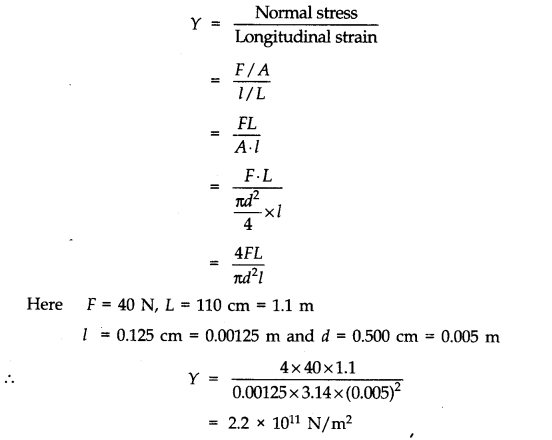
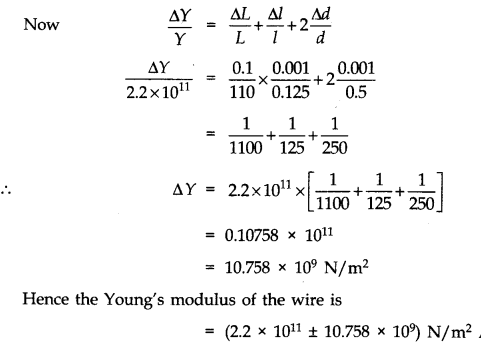
Question 9. A small error in the measurement of the quantity having the highest power (in a given formula) will contribute maximum percentage error in the value of the physical quantity to whom it is related. Explain why?
Answer:
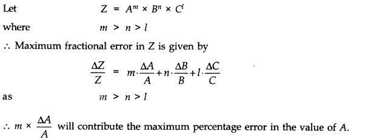
Question 10. The two specific heat capacities of a gas are measured as Cp = (12.28 ± 0.2) units and Cv = (3.97 ± 0.3) units. Find the value of the gas constant R.
Answer:
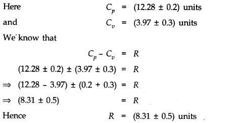
MORE QUESTIONS SOLVED
I.Very Short Answer Type Questions
Question 1. What are the derived units?
Answer: Units of those physical quantities which are derived from the fundamental units are called derived units.
Question 2. What do you understand by fundamental physical quantities?
Answer: Fundamental physical quantities are those quantities which are independent of each other. For example, mass, length, time, temperature, electric current, luminous intensity and amount of substance are seven fundamental physical quantities.
Question 3. Define parsec.
Answer: The distance at which a star would have annual parallax of 1 second of arc.
1 parsec = 3.08 x 1016 m
Question 4. Define Atomic mass unit (a.m.u.).
Answer: 1 a.m.u. = 1/12 th mass of carbon-12 atom, i.e., 1.66 x 10-27 kg.
Question 5. Which is a bigger unit-light year or parsec?
Answer: Parsec is bigger unit than light year (1 parsec = 3.26 light year).
Question 6. Do A and A.U. stand for same length?
Answer: No, 1 A = 10-10 m
1 A.U. = 1.496 x 1011 m
Question 7. Name two pairs of physical quantities whose dimensions are same.
Answer: —> Stress and Young’s modulus.
—> Work and Energy.
Question 8. What is the order of precision of an atomic clock?
Answer: About 1 in 1012 to 1013 s.
Question 9. What does RADAR stand for?
Answer: RADAR stands for ‘Radio detection and ranging’.
Question 10. What does SONAR stand for?
Answer: SONAR stands for ‘sound navigation and ranging’.
Question 11. f= x2, then what is the relative error in f?
Answer: 2Δx/x
Question 12. Name at least six physical quantities whose dimensions are ML2 T-2.
Answer: (i) Work (ii) Torque (iii) Moment of force (iv) Couple (v) Potential energy (vi) Kinetic energy.
Question 13. Name four units used in the measurement of extremely short distances.
Answer: 1 micron (1 p) = 10-6 m
1 nano metre (1 nm) = 10-9 m
1 angstrom (1 A) = 10-10 m
1 fermi (1 f) = 10-15 m.
Question 14. If x = a + bt + ct2 where x is in metre and t in second, then what is the unit of e?
Answer: According to the principle of homogeneity of dimensions.
[ct2] = [L] or [c] = [LT-2]
So, the unit of c is ms-2.
Question 15. Do all physical quantities have dimensions? If no, name four physical quantities which are dimensionless.
Answer: No, all physical quantities do not possess dimensions. Angle, specific gravity, Poisson’s ratio and Strain are four examples of dimensionless quantities.
Question 16. Obtain the dimensions of relative density.
Answer: As relative density is defined as the ratio of the density of given substance and the density of standard distance (water), it is a dimensionless quantity.
Question 17. Obtain the dimensional formula for coefficient of viscosity.
Answer:
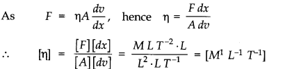
Question 18. Do specific heat and latent heat have the same dimensions?
Answer: No.
Question 19. Do mass and weight have the same dimensions?
Answer: No.
Question 20. Given that the value of G in the CGS system as 6.67 x 10-8dyne cm2 g-2 , find the value in MKS system.
Answer: 6.67 x 10-8 dyne cm2 g-2 = 6.67 x 1011 Nm2 /kg2 .
Question 21. Is Avogadro’s number a dimensionless quantity?
Answer: No, it has dimensions. In fact its dimensional formula is [mol-1].
Question 22. Can a physical quantity have dimensions but still have no units?
Answer: No, it is not possible.
Question 23. Are all constants dimensionless?
Answer: No, it is not true.
Question 24. What is N m-1 s2 equal to?
Answer: N m-1 s2 is nothing but SI unit of mass i.e., the kilogram.
Question 25. Express a joule in terms of fundamental units.
Ans. [Energy] = [M L2 T-2], hence 1 joule = 1 kg x 1 m2 x 1 s-2 = 1 kg m2 s-2.
Question 26. What is the dimensional formula for torque?
Answer: [M L2 T-2].
Question 27. Is nuclear mass density dependent on the mass number? (Given: r = r0 A1/3)
Answer: No, since density = Mass/Volume
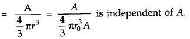
Question 28. What does LASER stand for?
Answer: LASER stands for ‘Light Amplification by Stimulated Emission of Radiation’.
II. Short Answer Type Questions
Question 1. A body travels uniformly a distance of (13.8 ± 0.2) m in a time (4.0 ± 0.3) s. What is the velocity of the body within error limits?
Answer:
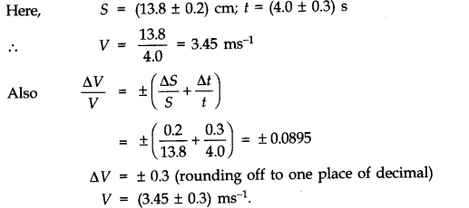
Question 2. What do you mean by order of magnitude? Explain.
Answer: The order of magnitude of a numerical quantity (N) is the nearest power of 10 to which its value can be written.For example. Order of magnitude of nuclear radius 1.5 x 10-14 m is -14.
Question 3. A laser signal is beamed towards the planet Venus from Earth and its echo is received 8.2 minutes later. Calculate the distance of Venus from the Earth at that time.
Answer: We know that speed of laser light, c = 3 x 108m/ s Time of echo, t = 8.2 minutes = 8.2 x 60 seconds
If distance of Venus be d, then t = 2d/c
d = 1/2ct = 1/2 x 3 x 108 x 8.2 x 60 m
= 7.38 x 1010 m
= 7.4 x 1010 m.
Question 4. The parallax of a heavenly body measured from two points diametrically opposite on earth’s equator is 60 second. If the radius of earth is 6.4 x 106 m, determine the distance of the heavenly body from the centre of earth. Convert this distance in A.U. Given 1 A.U. = 1.5 x 1011 m.
Answer:
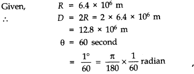
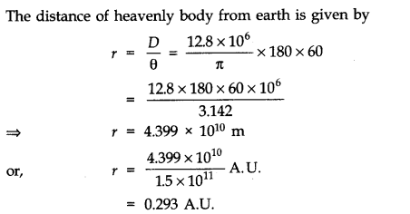
Question 5. If the length and time period of an oscillating pendulum have errors of 1% and 2% respectively, what is the error in the estimate of g?
Answer:
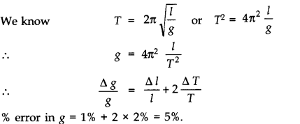
Question 6. If x = at2 + bt + c; where x is displacement as a function of time. Write the dimensions of a, b and c.
Answer: All the terms should have the same dimension
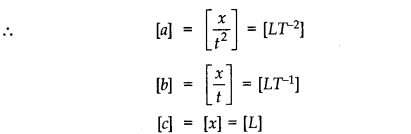
Question 7. The number of particles crossing per unit area perpendicular to x-axis in unit time N is given by N= -D(n2-n1/x2-x1), where n1 and n2 are the number of particles per unit volume at x1 and x2 respectively. Deduce the dimensional formula for D.
Answer:
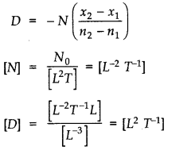
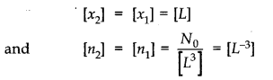
Question 8. An experiment measured quantities a, b, c and then x is calculated by using the relation ab2x =ab2/c3. If the percentage errors in measurements of a, b and c are ± 1%, ±2% and ± 1.5% respectively, then calculate the maximum percentage error in value of x obtained.
Answer:
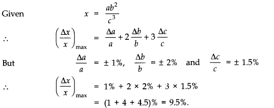
Question 9. If instead of mass, length and time as fundamental quantities, we choose velocity, acceleration and force as fundamental quantities and express their dimensions by V, A and F respectively, show that the dimensions of Young’s modulus can be expressed as [FA2 V-4].
Answer: We know that the usual dimensions of Y are [MLT–2]/[L2] i.e.,[M L-2T-2]
To express these in terms of F, A and V, we must express, M, L and T in terms of these new ‘fundamental’ quantities.
Now, [V] = [LT–1], [A] = [LT–2] and [F] = [MLT–2]
It follow that M = FA-1, T = VA~X, L = V2 A-1
[Y] = [ML-1T–2]
= [FA-1] [V2 A-1]-1[VA-1]-2=FA2V-4 Thus the ‘new’ dimensions of Young’s modulus are [FV-4 A2]
Question 10. The density of a cylindrical rod was measured by using the formula ρ=4m/πD2l
The percentage errors in m, D and l are 1%, 1.5% and 0.5%. Calculate the percentage error in the calculated value of density.
Answer:
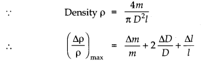
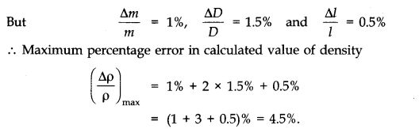
Question 11. The force experienced by a mass moving with a uniform speed v in a circular path of radius r experiences a force which depends on its mass, speed and radius. Prove that the relation is f=mv2/r.
Answer:
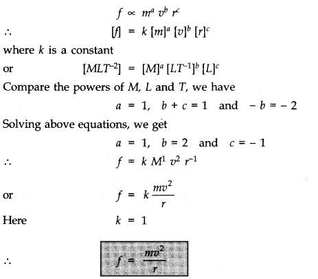
Question 12. The distance of the Sun from the Earth is 1.496 x 1011 m (i.e., 1 A.U.). If the angular diameter of the Sun is 2000″, find the diameter of the Sun.
Answer: Here, θ=2000
=2000/3600 x π /180 rad
= 9.7 x 10-3 rad d = 1.496 x 1011 m
From the figure,
θ=D/d
D=θ d
= 9.7 x 10-3 x 1.496 x 1011
= 1.45 x 109m
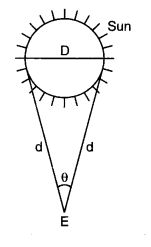
Question 13. Experiments show that the frequency (n) of a tuning fork depends upon the length (l) of the prong, the density (d) and Young’s modulus (Y) of its material. From dimensional considerations, find a possible relation for the frequency of a tuning fork.
Answer:
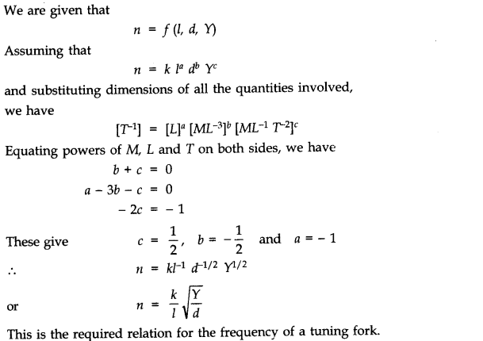
Question 14. Calculate focal length of a spherical mirror from the following observations: object distance u = (50.1 ± 0.5) cm and image distance v = (20.1 ± 0.2) cm.
Answer:
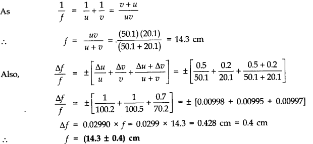
Question 15. The radius of the Earth is 6.37 x 106 m and its mass is 5.975 x 1024 kg. Find the Earth’s average density to appropriate significant figures.
Answer: Radius of the Earth (R) = 6.37 x 106 m
Volume of the Earth (V) = 4/3 πR3m3 = 4/3 x (3.142) x (6.37 x 106)3 m3
Average density (D)=Mass/Volume=M/V= 0.005517 x 106 kg m-3
The density is accurate only up to three significant figures which is the accuracy of the least accurate factor, namely, the radius of the earth.
Question 16. The orbital velocity v of a satellite may depend on its mass m, distance r from the centre of Earth and acceleration due to gravity g. Obtain an expression for orbital velocity.
Answer: Let orbital velocity of satellite be given by the relation
v = kma rb gc where k is a dimensionless constant and a, b and c are the unknown powers. Writing dimensions on two sides of equation, we have
[M° L1 T-1] = [M]a [L]b [L T-2]c = [Ma Lb + c T-2c]
Applying principle of homogeneity of dimensional equation, we find that
a = 0 …(i)
b + c = 1 …(H)
– 2c = – 1 …(Hi)
On solving these equations, we find that
a=0,b=+(1/2) and c=+(1/2)
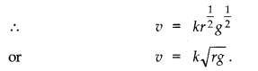
Question 17. Check by the method of dimensional analysis whether the following relations are correct.
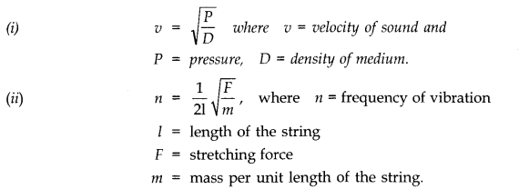
Answer:
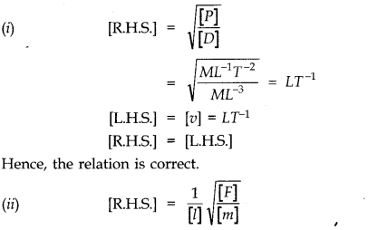
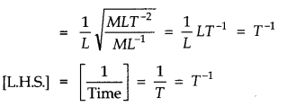
Hence, the relation is correct.
Question 18. Given that the time period T of oscillation of a gas bubble from an explosion under water depends upon P, d and E where P is the static pressure, d the density of water and E is the total energy of explosion, find dimensionally a relation for T.
Answer: We are given that
T = f (P, d, E)
Assuming that T = k Pa db Ec and substituting dimensions of all the quantities involved, we have
[T] = [M L-1 T-2]a [M L-3]b [M L2 T-2]c Equating powers of M, L and T on both sides,
we have a + b + c = 0
-a-3b + 2c = 0
-2 a-2 c = 1
Solving these equations, we get
a = -5/6 b = 1/2 c = 1/3
Question 19. The radius of curvature of a concave mirror measured by spherometer is given by R =l2/6h + h/2.The values of l and h are 4 cm and 0.065 cm respectively. Compute the error in measurement of radius of curvature.
Answer:
Question 20. The radius of the Earth is 6.37 x106 m and its average density is 5.517 x 103 kg m-3. Calculate the mass of earth to correct significant figures.
Answer: Mass = Volume x density
Volume of earth = 4/3π R3
= 4/3 x 3.142 x (6.37 x 106)3m3
Mass of earth = — x 3.142 x (6.37 x 106)3 x 5.517 x 103 kg
= 5974.01 x 1021 kg = 5.97401 x 1024 kg
The radius has three significant figures and the density has four. Therefore, the final result should be rounded up to three significant figures. Hence, mass of the earth = 5.97 x 1024 kg.
Question 21. Find the dimensions of the following quantities
(i) Acceleration (ii) Angle (iii) Density
(iv) Kinetic energy (v) Gravitational constant (vi) Permeability
Answer:
Question 22. The length, breadth and thickness of a block of metal were measured with the help of a Vernier Callipers. The measurements are l = (5.250 ± 0.001) cm, b = (3.450 ± 0.001) cm,t = (1.740 ± 0.001) cm.Find the percentage error in volume of the block.
Answer: Volume of the block is given by
V = I b t
Relative error in the volume of block
Question 23. Find the value of 60 W on a system having 100 g, 20 cm and 1 minute as the fundamental units.
Answer: Here n1 = 60 W. Obviously, the physical quantity is power whose dimensional formula is [M1 L2 T3-]. The first system, in which unit of power is 1 watt, is SI system in which M1 = 1 kg,L1 = 1 m and T1= ls in second system, M2 = 100 g, L2 = 20 cm and T2 = 1 min = 60 s.
Question 24. By using the method of dimension, check the accuracy of the following formula: T =rhρg/2cos θ , where T is the surface tension, h is the height of the liquid in a capillary tube, p is the density of the liquid, g is the acceleration due to gravity, 6 is the angle of contact, and r is the radius of the capillary tube.
Answer: In order to find out the accuracy of the given equation we shall compare the dimensions of T and rh ρg/2cos θ
III. Long Answer Type Questions
Question 1. P.A.M. Dirac, a great physicist of 20th century found that from the following basic constants, a number having dimensions of time can be constructed:
(i) charge on electron (e), (ii) permittivity of free space (ε0), (iii) mass of electron (me), (iv) mass of proton (me) (v) speed of light (c), (vi) universal gravitational constant (G).
Obtain Dirac’s number, given that the desired number is proportional to mp-1 and me-2. What is the significance of this number?
Answer:
Substituting values of all known parameters we find that the value of x is nearly 15 billion years, which is approximately equal to the present estimate of the age of the universe.
Question 2. To determine acceleration due to gravity, the time of 20 oscillations of a simple pendulum of length 100 cm was observed to be 40 s. Calculate the value of g and maximum percentage error in the measured value of g.
Answer:
Here 0.1% is the error in the measurement of length, and 0.5% is the error in the measurement of time. Therefore, time needs more careful measurement.
Question 3. It is known that the period T of a magnet of magnetic moment M vibrating in a uniform magnetic field of intensity B depends upon M, B and I where I is the moment of inertia of the magnet about its axis of oscillations. Show that
Answer: We first note that the dimension of I are [ML2]. Also the magnetic moment has the units Am2 so that its dimensions can be written as [AL2] where A stands for the dimensions of the electric current. Finally the magnetic field vector B has the units newton (per ampere metre) so that its dimensions can be written as
Question 4. Briefly explain how you will estimate the molecular diameter of oleic acid.
Answer: To determine the molecular diameter of oleic acid, we first of all dissolve 1 mL of oleic acid in 20 mL of alcohol. Then redissolve 1 mL of this solution in 20 mL of alcohol. Hence, the concentration of final solution is 1/20 x 1/20 =1/400 th part of oleic acid in alcohol.
Now take a large sized trough filled with water. Lightly sprinkle lycopodium powder on water surface. Using a dropper of fine bore gently put few drops (say n) of the solution prepared on to water. The solution drops spread into a thin, large and roughly circular film of molecular thickness on water surface. Quickly measure the diameter of thin circular film and calculate its surface area S.
If volume of each drop of solution be V, then volume of n drops = n V
Volume of oleic acid in this volume of solution = nV/400
It t be the thickness of oleic acid film formed over water surface then the volume of oleic acid film = St
St =nV/400
=>t=nV/400S
As the film is extremely thin, this thickness t may be considered to be the size of one molecule of oleic acid i.e., t is the molecular diameter of oleic acid.
Experimentally, molecular diameter of oleic acid is found to be of the order of 10-9 m.
Question 5. Obtain a relation between the distance travelled by a body in time t, if its initial velocity be u and accelerationf.
Answer: Let the distance covered is S,

IV. Multiple Choice Questions
Question 1. The SI units of magnetic field is
(a) weber per metre2 (b) newton per coulomb per (metre per second)
(c) newton per ampere per metre (d) all the above
Question 2. The dimensions of energy per unit volume are the same as those of
(a) pressure (b) force
(c) modulus of elasticity (d) all the above
Question 3. The SI units of the universal gravitational constant G are
(a) kg m2 s-2 (b) kg-1 m3 s-2 (c) N kg2 m-2 (d) N kg2 m-2
Question 4. The number of particles crossing per unit area perpendicular to X-axis in unit time is
N=-D n2-n1/x2-x1
Question 4. where n1 and n2 are number of particles per unit volume for the value of x1 and x2
respectively. The dimensions of diffusion constant D are
(a) M°L T2 (Ib) M°L2 T-4 (c) M°L T3 (d) M°L2T3
Question 5. A physical quantity is represented by X = MaLb TA If percentage error in the measurement of M, L and T are a%, (3% and y% respectively, then total percentage error is
(a) (αa – βb +γc)% (b) (αa + βb +γc)%
(c) (αa – βb — γc)% (d) none of the above
Question 6. ‘Parsec’ is the unit of:
(a) Time (b) Distance (c) Frequency (d) Angular acceleration
Question 7. The density of a cube is measured by measuring its mass and the length of its sides. If the maximum errors in the measurement of mass and length are 3% and 2% respectively, then the maximum error in the measurement of density is
(a) 9% (b) 7% (c) 5% (d) 1%
Question 8. A wire has a mass 0.3 ± 0.003 g, radius 0.5 ± 0.005 mm and length 6 ± 0.06 cm. The maximum percentage error in the measurement of its density is
(a) 1 (b)2 (c)3 (d)5
Answer: 1.—(d) 2.—(d) 3 —(b) and (c) 4.—(d) 5.—(b)
6 .—(b) 7 .—(a) 8 .—(d) 9.—(b) 10.—(d)
V. Question On High Order Thinking Skills (HOTS)
Question 1. A laser light beam sent to the moon takes 2.56 s to return after reflection at the Moon’s surface. Calculate the radius of the lunar orbit around the eazth.
Answer:
Question 2. The parallactic angle subtended by a distant star is 0.76 on the earth’s orbital diameter (1.5 x 1011 m). Calculate the distance of the star from the earth.
Answer:
Question 3. The heat dissipated in a resistance can be obtained by the measurement of resistance, the current and time. If the maximum error in the measurement of these quantities is 1 %, 2 % and 1 % respectively, what is the maximum error in determination of the dissipated heat?
Answer:
Question 4. E, m, 1 and G denote energy, mass, angular momentum and gravitational constant respectively.Determine the dimensions of El2/m5G2.
Answer:
Question 5. The Reynold’s number nR for a liquid flowing through a pipe depends upon: (i) the density of the liquid ρ, (ii) the coefficient of viscosity η, (iii) the speed of flow of the liquid v, and (iv) the f radius of the tube r.Obtain dimensionally an expression for nR. Given, nR is directly proportional to r.
Answer:
Note in Eqn. (1) we have used the information that nR is directly proportional to r. If this information was not available there will be four unknowns. By equating powers of M, L and ‘ T only three independent equations will be obtained and they cannot give values of the four
unknowns. Now
Question 6.
Answer:
Question 7. The speed of light in air is 3.00 x 108 ms 1. The distance travelled by light in one year (i.e., 365 days = 3.154 x 107 s) is known as light year. A student calculates one light year = 9.462 x 1015 m. Do you agree with the student? If not, write the correct value of one light year.
Answer: One light year = speed x time = 9.462 x 1015 m. When two physical quantities are multiplied, the significant figures retained in the final result should not be greater than the least number of significant figures in any of the two quantities. Since, in this case significant figures in one quantity (3.00 x 108 ms–1) are 3 and the significant figures in the other quantity (3.154 x 107 s) are 4, therefore, the final result should have 3 significant figures. Thus, the correct value of one light year = 9.46 x 1015 m.
Question 8.
Answer:
Question 9. If velocity of sound in a gas depends on its elasticity and density, derive the relation for the velocity of sound in a medium by the method of dimensions.
Answer: If v be the velocity of sound, E the elasticity of the medium and p the density of the medium, then
where k is a dimensionless constant of proportionality. Writing down the dimensions of both sides of equation (i), we get
Question 10. Reynold’s number NR (a dimensionless quantity) determines the condition of laminar flow of a viscous liquid through a pipe. NR is a function of the density of the liquid r, its average speed is v and the coefficient of viscosity of the liquid is h. If NR is given directly proportional to d (the diameter of the pipe),
Answer: As the Reynold’s number NR depends on density p, average speed v and coefficient of viscosity η, then let us say
Question 11. ft is required to find the volume of a rectangular Mock. A Vernier Caliper is used to measure the length, width and height of the Mock. The measured values are found to be 1.37 cm, 4.11 cm and 2.56 cm respectively.
Answer: The measured (nominal) volume of the block is,
V = l x w x h
= (1.37 x 4.11 x 2.56) cm3 = 14.41 cm3
The least count of Vernier Caliper is ± 0.01 cm Uncertain values can be written as
l = (1.37 ± 0.01) cm w = (4.11 ± 0.01) cm h = (2.56 ± 0.01) cm Lower limit of the volume of the block is,
V ) = (1.37 – 0.01) x (4.11 – 0.01) x (2.56 – 0.01) cm3 = (1.36 x 4.10 x 2.55) cm3 = 14.22 cm3
This is 0.19 cm3 lower than the nominal measured value.
Similarly the upper limit can also be calculated as follows.
V(max) = (1.37 + 0.01) x (4.11 + 0.01) x (2.56 + 0.01) cm3 = (1.38 x 4.12 x 2.57) cm3 = 14.61 cm3
This is 0.20 cm3 higher than the measured value.
But we choose the higher of these two values as the uncertainty i.e. (14.41 ± 0.20) cm3
Question 12. In an experiment on determining the density of a ectangular Mock, the dimensions of the Mock are measured with a Venier Caliper (with a least count of 0.01 cm) and its mass is measured with a beam balance of least count of 0.1 gm. How do we report our result for the density of the block?
Answer: Let the measured values be :
Mass of the block (m) = 39.3 g
length (1) = 5.12 cm
breadth (b) = 2.56 cm
thickness (f) = 0.37 cm
The density of the block is given by
VI. Value-Based Questions
Question 1. Suresh went to London to his elder brother Lalit who is a Civil Engineer there. Suresh found there f the currency is quite different from his country. He could not understand pound and how it is converted into rupees. He asked there an Englishman how far is Central London from here.He replied that it is 16 miles. Suresh again got confused because he never used these units in India.
In the evening Suresh inquired all about it. His brother told him about the unit system used in England. He explained his brother that here F.P.S. system is used. It means, distance is measured in foot, mass in pound and time in seconds whereas in India it is MKS system.
(i) What values are displayed by Suresh?
(ii) How many unit system are there?
Answer: (i) Sincerity, Curiosity, dedicated and helping nature
(ii) Unit system are :
(a) FPS system
(b) MKS system
(c) CGS system
NCERT Solutions for Class 11 Physics All Chapters
- Chapter 1 Physical World
- Chapter 2 Units and Measurements
- Chapter 3 Motion in a Straight Line
- Chapter 4 Motion in a plane
- Chapter 5 Laws of motion
- Chapter 6 Work Energy and power
- Chapter 7 System of particles and Rotational Motion
- Chapter 8 Gravitation
- Chapter 9 Mechanical Properties Of Solids
- Chapter 10 Mechanical Properties Of Fluids
- Chapter 11 Thermal Properties of matter
- Chapter 12 Thermodynamics
- Chapter 13 Kinetic Theory
- Chapter 14 Oscillations
- Chapter 15 Waves
We hope the NCERT Solutions for Class 11 Physics Chapter 2 Units and Measurements help you. If you have any query regarding NCERT Solutions for Class 11 Physics Chapter 2 Units and Measurements, drop a comment below and we will get back to you at the earliest.